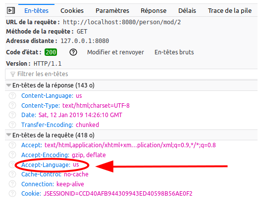
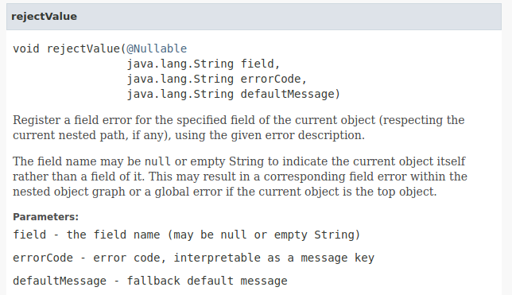
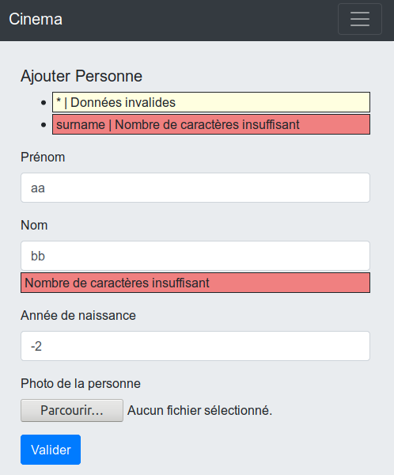

Introduction
Spring
Spring rend la programmation Java plus rapide, plus facile et plus sûre pour tout le monde. L’orientation de Spring sur la vitesse, la simplicité et la productivité en a fait l’un des plus populaires framework Java.
On retrouve Spring dans tous les contextes : depuis les sites de commerce en ligne jusqu’aux voitures connectées, en passant par les applications de streaming TV et bien d’autres applications.
Spring est un ensemble d’extensions et de bibliothèques tierces intégrées qui permet de bâtir à peu près n’importe quel type d’applicaton. Au coeur de Spring on retrouve l’Inversion de Contôle (Inversion of Control, IoC) et l’Injection de dépendances (Dependency Injection, DI), ces deux caractéristiques sont à la base d’un grand nombre d’autres caractéristiques et fonctionnalités.
Une application Spring classique est relativement difficile à mettre en oeuvre et demande une expertise certaine de la part du chef de projet pour en construire l’ossature et définir les fichiers de configuration. Spring Boot est une verion de Spring plus facile à mettre en oeuvre tout en offrant les mêmes avantages que Spring. Spring Boot évite notamment les fichiers de configuration XML complexes.
Spring Boot
Spring Boot est une version de Spring qui privilégie les conventions plutôt que les configurations (convention over configuration), à savoir que si le développeur respecte un certain nombre de normes comme le nommage, le placement des fichiers de code, les annotations, … il peut s’affranchir d’un grand nombre de fichiers de configuration. Spring fournit même un site dédié qui permet de générer un squelette d’application, https://start.spring.io , connu également sous le nom de Spring Initializr.
Spring Boot c’est :
-
Un outil de construction rapide de projets Spring
-
L’intégration des nombreux sous-projets Spring
-
La possibilité de choisir entre plusieurs technologies pour la persistance, la logique applicative ou la gestion des vues. Plusieurs technologies peuvent cohabiter
-
L’assurance de toujours avoir les bonnes dépendances
-
Etre prêt à commencer à programmer en quelques minutes
-
-
Une vision convention plutôt que configuration
-
L’application est prévue pour fonctionner avec un ensemble cohérents de paramètres par défaut
-
La configuration et la dépendance entre beans se fait principalement par annotations
-
Utilisation de fichiers properties simples pour surcharger les paramètres par défaut
-
On peut quand même utiliser des fichiers de configuration XML en faisant un effort
-
Les dépendances d’une application Spring Boot
Spring Initializr permet de choisir les dépendances/frameworks à utiliser pour la conception d’une application certaines dépendances sont presque indispensables à la création d’une application Web, d’autres sont optionnelles et peuvent être choisies plus tard.
-
Les dépendances indispensables :
-
Spring Boot DevTools: permet des redémarrages rapides des applications, le rechargement temps réel des configurations pour une expérience de programmation plus fluide. Mais consomme un peu plus de ressources. -
Spring Web: pour construire des applications Web MVC, y compris RESTFUL. Utilise Apache Tomcat comme conteneur de servlets par défaut. -
Apache FreemarkerouThymeleaf: un des deux moteurs de templates pour gérer les pages HTML, pas les deux en même temps autant que possible.
-
-
Les dépendances optionnelles :
-
Spring Data JPA: pour gérer la persistance des données dans une base SQL -
Apache Derby DatabaseouH2 DatabaseouPostgreSQL DriverouMySQL Driver: pour gérer les accès à une base de données SQL. Nécessaire pourSpring Data JPA. -
Spring Security: framework d’authentification et d’autorisation pour créer des applications sécurisées. Attention dès que ce composant est installé l’application demande une authentification. -
Lombok: un framework qui permet de s’affranchir, entre autres, des getters et des setters. Attention pour l’utiliser il vaut mieux avoir installé le plugins IntelliJ correspondant.
-
Générer une application Spring Boot
Le moyen le plus simple pour générer une application Spring Boot est de passer par le site https://start.spring.io qui permet positionner un certain nombre de paramètres et de choisir les dépendances à utiliser.
Les choix possibles :
-
Les paramètres de l’application :
-
l’outil utilisé pour gérer le projet :
MavenouGradle -
le langage de programmation utilisés :
Java,GroovyouKotlin -
La version de Spring Boot
-
Les métadonnées de l’application :
-
Nom du groupe : nom dns de l’organisation
-
Nom de l’artefact : nom du projet
-
Nom d’affichage du projet
-
Description du projet
-
Le type de packaging :
-
jar: application indépendante avec serveur tomcat intégré -
war: application prête à être déployée dans un conteneur de servlets
-
-
La version de
Java: 8 ou 11 recommandées, pas 15
-
-
-
Les dépendances de l’application
Première application
Une première application Spring Boot
Créer le projet
Dans Spring Initializr effectuez les choix suivants :
-
Paramètres :
-
Project : Maven Project
-
Language : Java
-
Spring Boot version : 2.4.2
-
Métadonnées du projet :
-
Group : fr.vincimelun
-
Artifact : sbfirst
-
Name : Spring Boot First
-
Description : Première application Spring Boot
-
Package name : fr.vincimelun.sbfirst
-
Packaging : jar
-
Java (JVM) version : 11
-
-
-
Dependencies :
-
Spring Boot DevTools
-
Spring Web
-
Apache Freemarker
-
Spring Initilizr génére un fichier .zip, sbfirst.zip, qui contient le projet prêt à l’emploi.
sbfirstsbfirst
├── .gitignore
├── HELP.md
├── mvnw
├── mvnw.cmd
├── pom.xml (1)
└── src
├── main
│ ├── java
│ │ └── fr
│ │ └── vincimelun
│ │ └── sbfirst
│ │ └── SpringBootFirstApplication.java (2)
│ └── resources
│ ├── application.properties (3)
│ ├── static (4)
│ └── templates (5)
└── test
└── java
└── fr
└── vincimelun
└── sbfirst
└── SpringBootFirstApplicationTests.java
| 1 | Fichier Maven définissant le projet |
| 2 | L’application principale (fonction main) |
| 3 | Le fichier de configuration principal de l’application |
| 4 | Le dossier pour stocker les éléments fixes comme les images ou les feuilles de style css |
| 5 | Le dossier de stockage des templates Freemarker ou Thymeleaf |
La classe principale de l’application ressemble à celles qu’on peut écrire pour n’importe quelle application en mode ligne de commande : une fonction main statique qui permet d’instancier et de lancer l’application.
package fr.vincimelun.sbfirst;
import org.springframework.boot.SpringApplication;
import org.springframework.boot.autoconfigure.SpringBootApplication;
@SpringBootApplication
public class SpringBootFirstApplication {
public static void main(String[] args) { (1)
SpringApplication.run(SpringBootFirstApplication.class, args); (2)
}
}| 1 | Fonction main de l’application |
| 2 | Construction et lancement de l’application |
Le fichier application.properties est vide, il ne contiendra que les éléments particuliers à la configuration de l’application comme les informations de connexion aux bases de données, ou la configuration du moteur de templates. Par défaut tout doit fonctionner sur les conventions.
Configurer le projet
spring.freemarker.template-loader-path= classpath:/templates
spring.freemarker.suffix= .ftlUn premier contrôleur
Un contrôleur est une classe qui est annotée avec @Controller et qui contient des méthodes associées à des URI, ces methodes peuvent être associée à des annotations comme @GetMapping, @PostMapping, … ou @RequestMapping plus générique. Les paramètres passés à ces méthodes sont variables et interprêtés par le moteur de Spring MVC.
Par convention les contrôleurs sont créés dans le package controller de l’application
package fr.vincimelun.sbfirst.controller;
import org.springframework.stereotype.Controller;
import org.springframework.web.bind.annotation.GetMapping;
@Controller
public class MainController {
@GetMapping("/") (1)
public String index(){
return "index"; (2)
}
}| 1 | Route correspondant pour la méthode GET et l’URI / |
| 2 | Nom du template associé, sans l’extention .ftl |
<html>
<body>
<h1>Bienvenue dans votre première application Spring Boot</h1>
</body>
</html>Pour passer des données au template associé à l’URI, il suffit de déclarer un objet de type Model dans les paramètres de la méthode. Attention cet objet est instancié par Spring, il n’y a qu’à l’utiliser. On peut considérer un objet de type Model comme un Map.
Model @GetMapping("/avecmodele")
public String withModel(Model model){ (1)
model.addAttribute("nom", "Lagaffe"); (2)
model.addAttribute("profession", "Touche à tout"); (3)
return "avecmodele"; (4)
}| 1 | Injection d’un objet de type Model dans la méthode |
| 2 | Ajout de l’attribut nom |
| 3 | Ajout de l’attribut profession |
| 4 | Nom du template qui sera fusionné avec le Model |
Le template associé peut utiliser les objets nom et profession du Model
Model<html>
<body>
<h1>Avec des données passées au template</h1>
Nom : ${nom} <br/>
Profession : ${profession} <br/>
</body>
</html>Gérer les données renvoyées par un formulaire HTML
Pour récupérer les données d’un formulaire HTML ou utilise en paramètre un POJO annoté @ModelAttribute qui représente les données gérées par le formulaire. Par exemple si on souhaite récupérer des informations sur une personne représentée par son nom, son prénom et sa profession, il faut d’abord créer le POJO correspondant dans un package appelé Model
Personnepackage fr.vincimelun.sbfirst.model;
public class Person {
private String name;
private String givenName;
private String job;
public String getName() {
return name;
}
public void setName(String name) {
this.name = name;
}
public String getGivenName() {
return givenName;
}
public void setGivenName(String givenName) {
this.givenName = givenName;
}
public String getJob() {
return job;
}
public void setJob(String job) {
this.job = job;
}
}Ensuite il faut créer deux méthodes dans la classe MainController une pour afficher le formulaire et une pour récupérer les données du formulaire et les traîter (ici il s’agira juste de les afficher).
1
2
3
4
5
6
7
8
9
10
11
12
13
@GetMapping("/personne") (1)
public String personFormDisplay(){
return "personform";
}
@PostMapping("/personne") (2)
public String personFormProcess(
@ModelAttribute(name="persondata") Person person, (3)
Model model) (4)
{
model.addAttribute("persondisplay", person); (5)
return "persondisplay";
}
| 1 | Méthode associée à l’URI /personne et à la méthode GET pour afficher le formulaire |
| 2 | Méhtode associée à l’URI /personne et à la méthode POST pour traiter le formulaire |
| 3 | L’objet associé au formulaire pour récupérer les données (voir l’explication sur le formulaire), le nom est celui de la valise FORM du formulaire HTML persondata |
| 4 | L’objet person récupéré du formulaire est passé en paramètre au template d’affichage du résultat sous le nom persondisplay |
Les templates associés sont les suivants
1
2
3
4
5
6
7
8
9
10
11
<html>
<body>
<h1>Fiche d'information</h1>
<form action="/personne" method="post" name="persondata"> (1)
Nom : <input type="text" name="name"><br/> (2)
Prénom : <input type="text" name="givenName"><br/> (2)
Professtion : <input type="text" name="job"><br/> (2)
<input type="submit" value="Valider">
</form>
</body>
</html>
| 1 | Le nom associé au formulaire doit être le même que celui du @ModelAttribute dans la méthode personFormProcess |
| 2 | Les noms des champs doivent être les mêmes que ceux de l’objet de type Person annoté par @ModelAttribute |
1
2
3
4
5
6
7
8
9
10
<html>
<body>
<h1>Fiche personnelle</h1>
<ul>
<li>Nom : ${persondisplay.name}</li>
<li>Prenom : ${persondisplay.givenName}</li>
<li>Profession : ${persondisplay.job}</li>
</ul>
</body>
</html>
Exercices
ToDo
Reprendre l’exercice sur les ToDos du cours sur les servlets et l’adapter à Spring Boot. Pour cet exercice vous vous contenterez de créer une classe Controller nommée ToDoController que vous ajouterez au projet existant et qui gère l’URI /todo.
NagiosCfg
Reprendre l’exercice sur la génrération de fichiers de configuration Nagios et l’adapter à Spring Boot. Vous trouverez un corrigé version servlets en suivant le lien https://github.com/ocapuozzo/tomcat-switch-log . Pour cet exercice vous créerez un projet depuis Spring Initializr.
Introduction à JPA
Présentation
JPA est une interface de programmation permettant d’utiliser un modèle objet au-dessus d’une base de données relationnelle.
JPA associe un graphe de classes Java aux tables d’une base de données relationnelle par le biais :
-
de fichiers de configuration xml
-
d’annotations depuis Java 5 (c’est la méthode préférée)
Pour la suite nous utiliserons le modèle suivant :
Dans ce modèle un acteur peut avoir plusieurs rôles dans un film, ce n’est pa courant, mais ça arrive : dans "Docteur Folamour" Peter Sellers joue à la fois Colonel Lionel Mandrake, Président Merkin Muffley et Docteur Folamour.
Parfois, la base de données préexiste à l’application à développer.
Par exemple, voici un schéma d’une base de données, défini dans le dialecte H2, en phase avec le modèle d’analyse :
CREATE TABLE PERSONS
(
ID BIGINT AUTO_INCREMENT PRIMARY KEY NOT NULL,
SURNAME VARCHAR(60) NOT NULL,
GIVENNAME VARCHAR(40),
BIRTH_YEAR INTEGER,
IMAGE_PATH VARCHAR(80)
);
CREATE TABLE FILMS
(
ID BIGINT AUTO_INCREMENT PRIMARY KEY NOT NULL,
TITLE VARCHAR(50),
RATING DECIMAL(2,1),
IMAGE_PATH VARCHAR(120),
SUMMARY CLOB,
FILM_DIRECTOR BIGINT,
CONSTRAINT FILMS_PERSONS_ID_FK FOREIGN KEY (FILM_DIRECTOR)
REFERENCES PERSONS (ID)
);
CREATE TABLE PLAY
(
ID BIGINT AUTO_INCREMENT PRIMARY KEY NOT NULL,
PERSON_ID BIGINT NOT NULL,
FILM_ID BIGINT NOT NULL,
RANK INTEGER NOT NULL,
NAME VARCHAR(90),
CONSTRAINT PLAY___FK_PERSON FOREIGN KEY (PERSON_ID)
REFERENCES PERSONS (ID) ON DELETE CASCADE ON UPDATE CASCADE,
CONSTRAINT PLAY_FILMS_ID_FK FOREIGN KEY (FILM_ID)
REFERENCES FILMS (ID)
);Une application JPA se divise en deux parties :
-
Définir le modèle de données (graphe d’objets)
-
Gérer l’accès aux données (créer, récupérer, modifier et supprimer les données)
Définir le modèle
Une traduction de l’analyse
Le modèle qui nous intéresse ici est celui centré sur la logique métier du client, les données qu’ils manipulent. Ces données sont regroupées en entités, qui, dans le code, sont représentées par des classes, dites métier, parfois stéréotypées <<entity>> dans les diagrammes d’analyse.
| Il est fort pratique de représenter l’analyse sous la forme d’un diagramme de classes UML, car, en conception (design), l’analyse permet au développeur de se consacrer sur les détails des entités sans perdre le fil de leurs relations. |
Associer une table à une classe, les entités (entities)
package org.vincimelun.cinemajpa.model;
import javax.persistence.*;
import java.util.Collection;
import java.util.Objects;
@Entity (1)
@Table(name = "PERSONS") (2)
public class Personne
{
@Id (3)
@GeneratedValue(strategy = GenerationType.IDENTITY) (4)
@Column(name = "ID", nullable = false)
private long id; (5)
@Basic (6)
@Column(name = "SURNAME", nullable = false, length = 60) (7)
private String nom;
@Basic
@Column(name = "GIVENNAME", nullable = true, length = 40)
private String prenom;
@Basic
@Column(name = "BIRTH_YEAR", nullable = true)
private Integer anneeNaissance;
@Basic
@Column(name = "IMAGE_PATH", nullable = true, length = 80)
private String photo;
public long getId() {
return id;
}
public void setId(long id) {
this.id = id;
}
public String getNom() {
return nom;
}
public void setNom(String surname) {
this.nom = surname;
}
public String getPrenom() {
return prenom;
}
public void setPrenom(String givenname) {
this.prenom = givenname;
}
public Integer getAnneeNaissance() {
return anneeNaissance;
}
public void setAnneeNaissance(Integer birthYear) {
this.anneeNaissance = birthYear;
}
public String getPhoto() {
return photo;
}
public void setPhoto(String imagePath) {
this.photo = imagePath;
}
@Override
public boolean equals(Object o) {
if (this == o) return true;
if (o == null || getClass() != o.getClass()) return false;
Personne that = (Personne) o;
return id == that.id &&
Objects.equals(nom, that.nom) &&
Objects.equals(prenom, that.prenom) &&
Objects.equals(anneeNaissance, that.anneeNaissance) &&
Objects.equals(photo, that.photo);
}
@Override
public int hashCode() {
return Objects.hash(id, nom, prenom, anneeNaissance, photo);
}
@Override
public String toString() {
return "Personne{" +
"nom='" + nom + '\'' +
", prenom='" + prenom + '\'' +
", anneeNaissance=" + anneeNaissance +
", photo='" + photo + '\'' +
'}';
}
}| 1 | @Entity déclare la classe comme un objet persistant
associé par défaut à la table de même nom (à la casse près). |
| 2 | @Table déclare le nom de la table associée à la classe, indispensable
si les deux noms diffèrent comme c’est le cas ici. |
| 3 | @Id déclare l’attibut comme clé primaire, au moins un attribut doit
être marqué par cette annotation |
| 4 | @GeneratedValue indique que la valeur est générée automatiquement
par le SGBD |
| 5 | L’attribut associé à la propriété, l’annotation se fait soit sur les getters, soit sur les attributs, mais on ne mélange pas les styles. De préférence on annote les attributs, ça facilite la lecture de la classe. |
| 6 | @Basic désigne une propriété associée à un type de base. |
| 7 | @Column permet d’établir la correspondance entre la propriété de la classe
et la colonne de la table, ainsi que certaines règles de validation commme
l’interdiction de nullité, la longueur, le type… |
Gérer les associations un vers plusieurs (ManyToOne et OneToMany)
Dans le modèle un film a un réalisateur et un seul alors qu’une personne peut avoir réalisé plusieurs films.

L’association de Film vers Personne est de type ManyToOne. Cette même association vue côté Personne est de type OneToMany vers Film.
Si l’association est bidirectionnelle, la classe côté ManyToOne (dans notre cas Film) est dite propriétaire (owner) de l’association car sa table associée détient la clé étrangère de la relation. Le côté non propriétaire, ici Personne, doit utiliser l’élément mappedBy de l’annotation pour spécifier l’attribut du côté propriétaire. Pour les données en base, le système assure la cohérence des liens entre objets en mémoire. Par contre, en cas gestion mémoire de ces liens par la logique applicative, la cohérence est du ressort du développeur.
package org.vincimelun.cinemajpa.model;
import javax.persistence.*;
import java.math.BigDecimal;
import java.util.Collection;
import java.util.Objects;
@Entity
@Table(name="FILMS")
public class Film {
@Id
@GeneratedValue(strategy = GenerationType.IDENTITY)
@Column(name = "ID", nullable = false)
private long id;
@Basic
@Column(name = "TITLE", nullable = true, length = 50)
private String titre;
@Basic
@Column(name = "RATING", nullable = true, precision = 1)
private BigDecimal note;
@Basic
@Column(name = "IMAGE_PATH", nullable = true, length = 120)
private String afficheNom;
@Basic
@Lob
@Column(name = "SUMMARY", nullable = true)
private String resume;
@ManyToOne(fetch = FetchType.EAGER) (1)
@JoinColumn(name = "FILM_DIRECTOR") (2)
private Personne realisateur; (3)
...
}| 1 | L’annotation @ManyToOne permet de savoir que l’objet annoté doit être retrouvé dans une autre table. Le paramètre FetchType permet de savoir s’il faut immédiatement retrouver l’objet lié (EAGER) ou s’il faut le retrouver seulement lorsqu’il est accédé dans l’application (LAZY). La deuxième option diffère la requête SQL jusqu’à ce que l’application cherche à accéder à l’objet Personne |
| 2 | L’annotation @JoinColumn permet à l’application de déterminer quelle colonne dans la table sert de clé étrangère pour retrouver l’objet lié |
| 3 | Si FILM_DIRECTOR est une clé étrangère et un entier, l’objet associé est lui de type Personne. Avec JPA le développeur gère un graphe d’objets, pas une base de données SQL. |
package org.vincimelun.cinemajpa.model;
import javax.persistence.*;
import java.util.Collection;
import java.util.Objects;
@Entity
@Table(name = "PERSONS")
public class Personne
{
@Id
@GeneratedValue(strategy = GenerationType.IDENTITY)
@Column(name = "ID", nullable = false)
private long id;
@Basic
@Column(name = "SURNAME", nullable = false, length = 60)
private String nom;
@Basic
@Column(name = "GIVENNAME", nullable = true, length = 40)
private String prenom;
@Basic
@Column(name = "BIRTH_YEAR", nullable = true)
private Integer anneeNaissance;
@Basic
@Column(name = "IMAGE_PATH", nullable = true, length = 80)
private String photo;
@OneToMany(cascade= CascadeType.ALL, mappedBy = "realisateur") (1)
private Collection<Film> filmsRealises; (2)
...
}| 1 | @OneToMany indique qu’une instance de Personne peut être liée à plusieurs instances de Film en tant que réalisateur, c’est l’objet realisateur dans Film qui représente ce lien |
| 2 | Comme une personne peut avoir réalisé plusieurs films, ces films sont stockés dans une collection qui peut être vide si la personne n’a réalisé aucun film. |
Gérer l’accès aux données, les dépôts (repositories)
Présentation
Si les classes Entity permettent de définir les structures de données et la façon dont les objets sont liés aux tables SQL, elles ne permettent pas de manipuler les tables : créer, lire, mettre à jour ou supprimer des données. En anglais ces actions sont connues sous le nom de CRUD (Create, Read, Update, Delete). Les objets qui permettent de faire des opérations de type CRUD sur une base de données sont appelés des DAO (Data Access Object).
Créer des DAOs est une tâche répétitive et ingrate, 90% du code est
similaire d’un DAO à l’autre. Spring propose une méthode standard pour
gérer les DAOs au travers d’objets, ou plutôt d’interfaces, de type
CrudRepository, PagingAndSortingRepository
` ou `JpaRepository qui hérite de la classe précédente. Dans les cas simples CrudRepository suffit largement.
L’interface CrudRepository
Permet d’effectuer toutes les opérations de base d’un DAO :
-
long count(): compte le nombre d’entités disponibles -
void delete(T entity): supprime l’entité passée en paramètre -
void deleteAll(): supprime toutes les entités -
void deleteById(ID id): supprime une entité avec l’id passé en paramètre -
void existsById(ID id): retourne vrai si une entité avec l’id passé en paramètre existe -
Iterable<T> findAll(): retourne toutes les instances du type -
Iterable<T> findAllById(Iterable<ID> id): -
Optional<T> findById(ID id): retrouve une entité par son id -
<S extends T> S save(S entity): sauvegarde une entité donnée -
<S extends T> Iterable<S> saveAll(Iterable<S> entities): sauvegarde toutes les entités passées en paramètre.
Ci-dessous un exemple de CrudRepository :
package org.vincimelun.cinemajpa.dao;
import org.springframework.data.repository.CrudRepository;
import org.vincimelun.cinemajpa.model.Personne;
public interface PersonneRepository extends CrudRepository<Personne, Long> {
}Configurer un projet Spring Boot pour utiliser JPA
# Configuration de Freemarker
spring.freemarker.template-loader-path= classpath:/templates
spring.freemarker.suffix= .ftl
# Connexion à la base de données
spring.datasource.url=jdbc:h2:file:c:/db/cinema;AUTO_SERVER=true (1)
#spring.datasource.url=jdbc:h2:file:~/db/cinema;AUTO_SERVER=true (2)
spring.datasource.driver-class-name=org.h2.Driver (3)
spring.datasource.username=sa (4)
spring.datasource.password= (5)
spring.jpa.hibernate.ddl-auto=create-drop (6)
spring.datasource.initialization-mode=always (7)
spring.h2.console.enabled=true (8)| 1 | Chaîne JDBC de connexion à la base de données, version Windows |
| 2 | La même version Linux ou Mac. ;AUTO_SERVER=true permet une connexion par des tiers comme intellij… (H2 mixed mode) |
| 3 | Driver JDBC à utiliser |
| 4 | Utilisateur pour accéder à la source de données JDBC |
| 5 | Mot de passe de l’utlisateur |
| 6 | Le schéma de la base de données est généré à partir des entités JPA, à chaque exécution de l’application les tables sont supprimées et recrées, l’option create-drop n’est valable que pour la phase de développement, en production on utilise l’option none |
| 7 | Si un fichier `data.sql`est présent, il est automatiquement utilisé pour importer les données qu’il contient dans la base de données |
| 8 | Permet d’accéder à la console H2 une fois que l’application est lancée à l’URL http://localhost:8080/h2-console, il s’agit d’une application web intégrée au moteur H2 permettant de manipuler la base de données |
Travail à faire
A partir du projet cinemajpa présent sur la clé :
-
Reprendre l’application les templates que vous aves créé pour l’application
cinemade la semaine dernière et créez la partie contrôleur decinemajpa -
Pour l’entité Personne créez un formulaire qui permette de créer ou de modifier une personne, pour la photo d’une nouvelle personne vous utliserez pour l’instant l’image de substitution
person.png -
Même chose pour les films, mais en utilisant cette fois
poster.pngcomme image de substitution -
Enfin imaginez une interface permettant de gérer les rôles associés à un film.
Introduction (layout avec thymleaf)
Présentation
Lorsqu’une application web est constituée de plusieurs pages, il est alors de bon usage de conserver une unité de représentation.
Techniquement, cette unité de représentation se base sur :
-
un modèle, connu sous le nom de template ou layout (structuration HTML).
-
un ensemble de règles CSS partagées par l’ensemble des pages
-
[des dépendances de bibliothèques js]
En phase de prototypage, il est fréquent de s’appuyer sur des frameworks CSS (par exemples Bootstrap, bulma )
Ces solutions intègrent de nombreux composants CSS et JS. Ces composants sont destinés au tiers client (navigateur, smartphone…).
Il existe 2 solutions pour distribuer ces composants aux clients tiers :
-
donner aux clients un lien sur le réseau de contenu (CDN content delivery network), pour téléchargement, par exemple http://code.jquery.com/jquery-3.3.1.js
-
servir ces composants à partir du serveur web de l’application (communication HTTP entre le serveur HTTP de l’application et les clients), par exemple http://monapplication.com/js/jquery-3.3.1.js
Dans le cadre d’une application à faible diffusion, la deuxième solution peut être envisagée, de plus elle a le mérite d’assurer la disponibilité des composants (si l’application est disponible, alors ses composants le sont aussi), et, accessoirement, permet au développeur de travailler hors ligne.
webjars - une solution java
Nous nous placons dans le cas où c’est l’application qui héberge les composants dont auront besoin ses tiers clients.
Initialement, l’application devra donc les obtenir (elle utilisera CDN pour l’occasion). Elle pourrait pour cela utiliser des gestionnaires de version spécilisés comme npm, yarn, bower…), mais il serait dommage de ne pas profiter du gestionnaire de version maven ! C’est ce que permet la solution webjars, qui encapsule les composants client dans un jar. Tout cela se passe côté serveur bien entendu.
Les WebJars sont des librairies à destination des clients-web (par exemple jQuery & Bootstrap), packagées dans un fichier JAR (Java Archive), et disponible via divers gestionnaires d’automatisation de taches, comme maven par exemple.

La définition de la dépendance devra être copiée dans le fichier pom.xml du projet. C’est à partir de cette référence que maven téléchargera dans son dépot local les fichiers en question, et rendra accessibles ces fichiers en les plaçant dans le CLASSPATH du projet (ce qui les rendra accessible à l’IDE).
webjars - cas bootstrap
[...]
<dependency>
<groupId>org.webjars</groupId>
<artifactId>bootstrap</artifactId>
<version>4.1.3</version>
</dependency>
<!-- https://mvnrepository.com/artifact/org.webjars/jquery -->
<dependency>
<groupId>org.webjars</groupId>
<artifactId>jquery</artifactId>
<version>3.3.1-1</version>
</dependency>
</dependencies>Ces déclarations de dépendances, lorsqu’elle seront évaluées par maven, provoqueront le rapatriement, sur la machine hôte, des ressources inscrites dans le webjars. Ces ressources seront alors accessibles au projet, via l’IDE, au même titre que des librairies java.
Le développeur pourra donc y faire références à la conception des vues.
layout - cas thymeleaf
Avec thymeleaf, la conception d’un modèle de présentation (layout ou template) est basée sur la décomposition du modèle en fragments.
Voici une organisation typique de ressources liées à la logique de présentation:
├── application.properties
├── static
│ └── css
│ └── main.css (1)
└── templates
├── admin (2)
│ └── index.html (3)
├── error
│ └── 403.html
...
├── fragments
│ ├── footer.html (4)
│ └── header.html
└─ index.html
| 1 | pour la redéfinition de règles héritées, propre à l’application |
| 2 | en référence au rôle utilisateur prioritairement concerné (ici un admin) |
| 3 | les vues des controleurs sont placées dans un dossier portant le nom racine d’un contrôleur (AdminController) |
| 4 | les fichiers déclarant des fragments (parties réutilisées par les vues) sont logés dans le dossier fragments |
Les différentes pages partagent toutes les mêmes parties header (parties <head> et menu) et footer.
Voici un exemple d’utilisation :
<!DOCTYPE HTML>
<html xmlns:th="http://www.thymeleaf.org">
<head>
<title>Page Admin</title>
<div th:replace="fragments/header :: header-css (title='Admin')"/> (1)
</head>
<body>
<div th:replace="fragments/header :: header"/> (2)
<div class="container">
<h1>Admin index</h1>
</div>
<!-- /.container -->
<div th:replace="fragments/footer:: footer"/> (3)
</body>
</html>| 1 | insertion du fragment header-css (définit dans le fichier header.html) |
| 2 | insertion du fragment header (définit dans le fichier header.html) |
| 3 | insertion du fragment footer (définit dans le fichier footer.html) |
Voyons maintenant des exemples de composants fragment
<html xmlns="http://www.w3.org/1999/xhtml"
xmlns:th="http://www.thymeleaf.org"
xmlns:sec="http://www.thymeleaf.org/thymeleaf-extras-springsecurity4">
<head>
</head>
<body>
<div th:fragment="footer"> (1)
<div class="container">
<footer>
© 2021 myapplication.com
</footer>
<script type="text/javascript"
src="/webjars/bootstrap/4.1.3/js/bootstrap.min.js" (2)
th:src="@{/webjars/bootstrap/4.1.3/js/bootstrap.min.js}"> (3)
</script>
<script type="text/javascript"
src="/webjars/jquery/3.3.1-1/jquery.min.js">
th:src="@{/webjars/jquery/3.3.1-1/jquery.min.js}"
</script>
</div>
</div>
</body>
</html>| 1 | Un composant est en fait le body d’une page HTML particulière, comportant une déclaration de fragment. |
| 2 | Ceci est un exemple (la doc thymleaf parle de prototype). Sous IntelliJ, pensez à utiliser la complétion automatique (ctrl+ esp) pour l’expression de chemin. |
| 3 | C’est la valeur src qui sera appliquée. Les expressions thymleaf de chemin ou de lien sont encadrées par @{ … }. |
<html xmlns:th="http://www.thymeleaf.org">
<head>
<th:block th:fragment="header-css"> (1)
<link rel="stylesheet" type="text/css"
href="/webjars/bootstrap/4.1.3/css/bootstrap.min.css" (2)
th:href="@{/webjars/bootstrap/4.1.3/css/bootstrap.min.css}" /> (3)
<link rel="stylesheet" th:href="@{/css/main.css}" (4)
href="../static/css/main.css" />
<title th:text="${title ?: 'Default title'}"></title> (5)
</th:block>
</head>
<body>
<div th:fragment="header"> (6)
<nav class="navbar navbar-inverse">
<div class="container">
<div class="navbar-header">
<a class="navbar-brand" th:href="@{/}">Spring Boot</a>
</div>
<div id="navbar" class="collapse navbar-collapse">
<ul class="nav navbar-nav">
<li class="active"><a th:href="@{/}">Home</a></li>
</ul>
</div>
</div>
</nav>
</div>
</body>
</html>| 1 | déclaration d’un fragment nommé header-css |
| 2 | prototype de lien bootstrap |
| 3 | expression du lien th:href |
| 4 | le fichier CSS pour les redéfinitions propres à l’application (ne pas faire référence au dossier static) |
| 5 | définition de la valeur de <title> avec valeur par défaut (opérateur elvis) |
| 6 | déclaration d’un autre fragment dans le même fichier |
Controleur
Voici un exemple de mise en oeuvre, à minima :
// AdminController
@GetMapping("/admin")
public String admin() {
return "/admin/index";
}Nous avons ici rangé les vues dans des dossiers portant le nom du rôle prioritairement concerné, un parti pris.
Documentation
-
Documentation générale : thymeleaf documenataion
-
Ne pas passer à côté des classes utilitaires : classes utilitaires - avec exemples
-
Différentes façons d’inclure un fragment : thymeleaf:insclusion de fragments
-
Paramétrer un fragment : fragment paramétré
Internationalisation
Présentation
Dans un monde où l’interconnexion ne connait, bien souvent, aucune frontière, il est opportun, pour une application web à large public, de pouvoir adapter son IHM à la langue de ses utilisateurs.
Les frameworks sont généralement outillés pour cela, est la solution s’intitule internationalisation,
terme un peu long à écrire (18 caratères), c’est pour cela qu’il est
le plus souvent noté i18n.
Identification de la langue de l’utilisateur
Rappelons-le, l’utilisateur sollicite un service d’une application web par le biais d’une requête HTTP.
Cette dernière embarque dans son entête certaines données (implicitement) telles que des informations
sur le navigateur du client et sa langue (Accept-Language) :

La valeur de Accept-Language du client HTTP peut être exploitée par les applications web
afin d’adapter le texte de la réponse à la langue
de l’utilisateur.
Externalisation des messages
On entend par message tout texte destiné à être présenté à l’utilisateur.
Exemple de message non internationalisé :
<label th:for="${product.name}">Nom du produit :</label>Le même exemple i18n :
<label th:for="${product.name}"
th:text="#{product.name}">Nom du produit</label>Le contenu textuel du label (Nom du produit) dans cet exemple i18n n’est là que pour
documenter le code source : il sera remplacé par la valeur associée à la clé product.name présente
dans un fichier de ressource sélectionné par Spring (à défaut, c’est la clé elle-même qui sera rendue).
Observez la syntaxe d’un message i18n avec thymeleaf : #{clé}
Pour disposer d’une telle ressource, il suffit de créer un fichier messages.properties
et autant d’autres fichiers .properties qu’il y a de langues couvertes par l’application,
à partir du dossier src/main/resources. Exemple :
|-- pom.xml |-- src | |-- main | | |-- java | | | `... | | `-- resources | | |-- application.properties | | |-- i18n | | | |-- messages.properties | | | |-- messages_fr.properties | | | |-- messages_us.properties | | | |-- validationMessages.properties | | | |-- validationMessages_fr.properties | | | `-- validationMessages_us.properties | | |-- static | | | |-- css | | | | |-- cinema.css | | | | `-- jumbotron.css | | | `-- favicon.ico | | `-- templates | | |... | | | `...
par défaut, messages.properties est attendu à la racine du dossier resources
|
Exemple de messages traduits :
# messages.properties site.title=My cinema reservationConfirmation=We have processed your reservation - thank you
# messages_fr.properties site.title=Mon cinema reservationConfirmation=Nous avons précédé à votre réservation - merci
Configuration des chemins de messages
Le dossier racine des messages, ainsi que leur préfixe, peuvent être paramétrés. Dans le but de centraliser les instructions de configurations, nous créons une classe dédiée qui expose des beans de configuration.
package fr.laerce.cinema.config;
import org.springframework.context.MessageSource;
import org.springframework.context.annotation.Bean;
import org.springframework.context.annotation.Configuration;
import java.util.Locale;
@Configuration
public class InternationalizationConfig extends WebMvcConfigurerAdapter {
/**
* This is where we'll add the interceptor object
* that handles internationalization
*/
@Override
public void addInterceptors(InterceptorRegistry registry) {
registry.addInterceptor(localeChangeInterceptor());
}
/**
* Set encoding and prefix file name of messages resources
* @return
*/
@Bean
public MessageSource messageSource() {
ReloadableResourceBundleMessageSource messageSource =
new ReloadableResourceBundleMessageSource();
messageSource.setBasename("classpath:/i18n/messages"); (1)
messageSource.setDefaultEncoding("UTF-8"); (2)
return messageSource;
}
private MessageSource messageSourceValidator() {
ReloadableResourceBundleMessageSource messageSource =
new ReloadableResourceBundleMessageSource();
messageSource.setBasename("classpath:/i18n/validationMessages");
messageSource.setDefaultEncoding("UTF-8");
return messageSource;
}
@Bean
public LocalValidatorFactoryBean validator() {
LocalValidatorFactoryBean bean = new LocalValidatorFactoryBean();
bean.setValidationMessageSource(messageSourceValidator());
return bean;
}
}| 1 | Définit le sous-dossier et le préfixe des fichiers de messages (messages est le préfixe par défaut) |
| 2 | Encoder les messages en UTF-8 (attention à sélectionner également UTF-8 comme encodage par défaut des fichiers dans votre éditeur) |
Il peut être pratique, pour un utilisateur, de sélectionner une des langues supportées
par l’application. Dans ce cas on configure le resolver de message afin de lui permettre
de sélectionner un fichier de langue sur la base d’un paramètre (par convention c’est
la variable lang qui est définie).
On ajoutera à la classe InternationalizationConfig les beans de configuration suivants :
/**
* Instantiate the appropriate locale resolution strategy
*
* @return locale resolver
*/
@Bean
public LocaleResolver localeResolver() {
// stores locale info in the session
SessionLocaleResolver resolver = new SessionLocaleResolver();
//default to US locale
resolver.setDefaultLocale(Locale.US);
return resolver;
}
/**
* This interceptor allows visitors to change the locale
*
* @return a LocaleChangeInterceptor object
*/
@Bean
public LocaleChangeInterceptor localeChangeInterceptor() {
LocaleChangeInterceptor interceptor = new LocaleChangeInterceptor();
//the request param that we'll use to determine the locale
interceptor.setParamName("lang");
return interceptor;
}
/**
* This is where we'll add the interceptor object
* that handles internationalization
*/
@Override
public void addInterceptors(InterceptorRegistry registry) {
registry.addInterceptor(localeChangeInterceptor());
}Détection et changement de langue
Nous avons vu que le choix de la langue (du fichier des messages) dépend de la configuration de l’application, dans les cas les plus courants ce choix est basé sur :
-
valeur de
Accept-Languagede l’entête HTTP (traitement par défaut, basé sur la configuration du client) -
valeur de la variable
lang(une valeur par défaut est définie côté serveur)
Le fichier messages.properties est celui qui sera utilisé en cas d’absence de fichier de traduction de la langue demandée.
|
Format des messages
Le format des messages est celui attendu par l' API MessageFormat. Ce sont des chaînes de caractères pouvant être paramétrées :
// src/main/resources/i18n/messages.properties
info.category.products =The category \"{1}\" contains {0} product(s)Exemple d’un cas d’utilisation :
// src/main/resources/templates/index/index.html
<h1 th:text="#{info.category.products(1234, 'sport')}"></h1>Qui produira la sortie suivante :
<h1>The category "sport" contains 1234 product(s)</h1>Plus vraisemblablement, le code aura une portée plus générale, comme ici :
<h1 th:text="#{info.category.products(${#lists.size(cat)}, ${cat.name})}"></h1>
#lists.size est une des méthodes bien pratique des objets helper de thymeleaf. Ces objets gèrent les types de base (String, List, Set, etc.).
Par exemple : ${#objects.nullSafe(obj,default)}, mais aussi URL, Message….
voir la liste des helpers
|
Messages en dehors de thymeleaf
Bien entendu, le développeur fera usage des messages i18n sur l’ensemble de son projet, et pas seulement directement sur les vues.
En effet, le système de validation fait un usage intensif de messages i18n.
Dans la définition d’une annotation
@Target({ ElementType.TYPE})
@Retention(RetentionPolicy.RUNTIME)
@Constraint(validatedBy = PersonConstraintValidator.class)
@Documented
public @interface PersonValidated {
String message() default "{person.bean.invalid}";
...Validation
Présentation
Le contrôle de validité des données d’entrée est une tache incontrournable en développement web. On ne saurait être trop prudent car on ne peut supposer les intentions à l’origine d’une requête HTTP.
Les données d’entrée concernées ici sont celles :
-
dans l’url (exemple
product/23ouproduct?id=23) -
dans le corps de la requête HTTP (comme c’est le cas avec
post)
La validité de ces données peut être vérifiée à grand coup de if..else dans le corps des méthodes contrôleur. Cette façon risque fort d’introduire de la redondance de vérification et alourdira assurément le code.
Comme toujours, la réponse consiste à déléguer le travail de validation à des services dédiés, en particulier via l’API Java Bean Validation.
Annotations de validation
Bean Validation définit un métamodèle et une API pour la validation de JavaBean. Les métadonnées sont représentées par des annotations (JSR-303 est la référence intiale)
Bean Validation 2.0 est définie par JSR 380 (juillet 2017) et prend en compte les nouvelles caractéristiques de Java 8 (version minimum requise de Java)
Hibernate propose une implémente de référence (hibernate.org/validator).
L’usage des annotations permet facilement de lier, à un même élément, une à plusieurs contraintes, appelées aussi régles de validation (validation rules).
Contrainte |
Description |
@Null @NotNull |
L’élément annoté doit être null ou différent de null |
@AssertTrue @AssertFalse |
L’élément annoté doit être true ou false |
@Min(value) |
L’élément annoté doit être un nombre dont la valeur est supérieure ou égale au minimum spécifié. |
@Max(value) |
L’élément annoté doit être un nombre dont la valeur est inférieure ou égale au maximum spécifié. Voir aussi @DecimalMin, @DecimalMax |
@Size(min=, max=) |
L’élément annoté doit être un nombre dont la valeur est dans les bornes spécifiées (inclusives) |
@Negative |
L’élément annoté doit être un nombre strictement négatif (zéro est considéré comme une valeur invalide). Voir aussi @NegativeOrZero, @Positive, @PositiveOrZero, @Digits |
@Future |
L’élément annoté doit être un instant, date ou time, dans le futur. Voir aussi @Past, @PastOrPresent, @FutureOrPresent |
@Pattern(regexp =) |
L’élément annoté doit être validé par l’expression régulière |
@NotEmpty |
L’élément annoté doit être non vide. Type supporté : |
@NotBlank |
L’élément annoté doit être non null et doit contenir au moins un caractère 'non-blanc'. Type supporté : |
L’élément annoté (String) doit être une adresse email bine-formée. |
|
@CreditCardNumber |
(hibernate) L’élément annoté représente un numéro de carte de credit. Vérifie selon l’implémentation de l’algorithme Luhn (qui traite de la syntaxe, non de la validité !) |
Voir une liste ici : table-builtin-constraints
Validation des données de requêtes
Les données sont celles passées dans l’url, comme par exemple la valeur 23 dans : product?id=23 ou product/23.
@Validated
@Controller
@RequestMapping(value = "/person")
public class PersonController {
@GetMapping("/validateMinNameParam")
public String validateMinNameParam(
@RequestParam("name") @Size(min=2) String name) {
// ...
}
@GetMapping("/validateMinName/{name}")
public String validateMinNamePathVariable(
@PathVariable("name") @Size(min=2) String name) {
// ...
}
}On prendra soin de déclarer l’annotation @Validated au niveau de la classe contrôleur.
Par défaut, une exception ConstraintViolationException sera déclenchée en cas de non respect de la contrainte sur le paramètre ou variable name.
Remarque : Par la suite @Validated devra être retiré pour supprimer l’effet ConstraintViolationException.
Validation de niveau attributs de bean
Lorsque les données sont transmises par post, ces données
peuvent être affectées aux différents attributs d’un bean :
la logique d’affectation est basée sur correspondance entre le nom
de l’attribut (d’un setter) et la clé (la propriété name) de la valeur d’entrée.
Pour réaliser cette tâche, Spring utilise les techniques de data binding (JavaBeans Specifications) et des convertisseurs.
Dans cet exemple, les données d’entrée (post) sont mappées dans un objet FormPerson pour être ensuite passé en argument du contrôleur (méthode).
1
2
3
4
5
6
@PostMapping("/add")
public String submit(@ModelAttribute FormPerson person){
// ...
return "redirect:/person/list";
}
Nous pouvons alors demander la validation du bean en question. Par prudence nous utilisons ici un Form Bean (l’approche par des beans métier est contestée[1]).
Pour ce faire, nous pouvons associer, au niveau d’un attribut (field),
des contraintes déclaratives (JSR-380 d’aout 2017). Exemple :
1
2
3
4
5
6
7
8
9
10
11
12
public class FormPerson {
@NotBlank
@Size(min=2, max=30)
private String name;
@NotNull
@Min(value=18, message="{person.age.minor}") (1)
private Integer age;
@Size(min=1, max=3)
private List<@NotBlank(message="{person.address.notblank}") String> addresses; (2)
| 1 | La valeur du message peut être une clé i18n (comme ici) ou une constante littérale |
| 2 | Contrainte sur les éléments de la collection addresses |
La validation des contraintes doit être demandée. Pour ce faire, deux déclarations sont attendues :
-
placement de l’annotation @Valid sur le bean injecté en argument de la méthode contrôleur
-
déclaration d’un paramètre (injecté) de type BindingResult qui portera les informations résultantes de la validation.
1
2
3
4
5
6
7
8
9
@PostMapping("/add")
public String submit(@Valid @ModelAttribute Person person, BindingResult result){
if (result.hasErrors()) {
return ... ;
}
// ...
return "redirect:/person/list";
}
À noter que l’action de validation peut être réalisée manuellement dans le corps de la méthode contrôleur (il faut dans ce cas ne pas utiliser @Valid ni BindingResult). Un exemple ici : https://www.baeldung.com/javax-validation
Validation de niveau bean
Les contraintes présentées jusqu’ici agissent au niveau de l’attribut. Pour des contraintes plus globales (cas de contraintes interdépendantes sur des attributs) on définira une contrainte métier au niveau de l’objet (de sa classe).
Par leur nature très spécifique, ces contraintes doivent être programmées, leur classe doivent
implémenter l’interface org.springframework.validation.Validator:
1
2
3
4
5
6
7
8
9
10
11
12
13
14
15
16
17
18
19
public class FormPersonValidator implements Validator {
/**
* This Validator validates just Person instances
*/
public boolean supports(Class clazz) {
return FormPerson.class.equals(clazz); (1)
}
public void validate(Object obj, Errors e) {(2)
ValidationUtils.rejectIfEmpty(e, "name", "name.empty"); (3)
FormPerson p = (FormPerson) obj;
// senior must have 2 adresses or more.
if (p.getAge() > 80 && p.getAddresses().size() < 2) {
e.rejectValue("addresses", "more.one.addresse.senior.citizen", "constraint senior addresses"); (4)
}
}
}
| 1 | Détermine la portée du validateur |
| 2 | Le premier argument est l’objet à valider, le deuxième représente le BindingResult (implémente Errors) qui sera passé au contrôleur |
| 3 | Une valeur 'empty' dans ce contexte signifie soit null soit chaine vide "". L’objet disposant de cet attribut ('name') n’a pas besoin d’être passé à cette méthode car l’objet Errors détient déjà une référence interne à l’objet cible. |
| 4 | La méthode rejectValue nous permet de déclarer une erreur liée à un attribut (rejectValue API) |

Activation dans un contrôleur
Il existe plusieurs façons de faire, mais toutes sont dans un esprit de délégation.
-
par injection du validateur
-
via une annotation
Par injection explicite
On déclare le validateur en tant que composant via l’annotation @Component
import org.springframework.validation.Validator;
@Component
public class FormPersonValidator implements Validator { ... }Puis un injecteur (sur l’attribut) dans la classe contrôleur :
1
2
3
4
5
6
7
8
@Controller
@RequestMapping(value = "/person")
public class PersonController {
@Autowired
FormPersonValidator personValidator;
...
Que l’on utilise dans une méthode de ce contrôleur :
1
2
3
4
5
6
7
8
9
10
11
12
13
14
15
@PostMapping("/add")
public String submit(@ModelAttribute FormPerson personDto, BindingResult result){ (1)
personValidator.validate(personDto, result); (2)
if (result.hasErrors()) { (3)
return "person/form";
}
Person person = converToEntity(personDto); (4)
personneDao.save(person);
return "redirect:/person/list";
}
| 1 | Le paramètre BindingResult sert à stocker les différentes erreurs détectées par les validateurs. |
| 2 | Lance la logique de validation. |
| 3 | En façon simple de détecter la présence d’erreurs. Dans ce cas, on retourne à la vue du formulaire qui se chargera de présenter les erreurs à 'utilisateur (chapitre suivant) |
| 4 | Conversion d’un DTO vers un objet métier. à ce sujet voir entity-to-and-from-dto-for-a-java-spring-application |
Par annotation
Cette autre façon, assez élégante, consiste à définir une annotation personnalisée
et s’appuie non plus sur l’API de validation de spring mais sur l’API javax.validation, de concert avec la logique de l’annotation @Valid.
Pour commencer on définiera 2 composants :
-
Le validateur (
PersonConstraintValidator) -
L’annotation associée (
PersonValidated)
Le validateur :
1
2
3
4
5
6
7
8
9
10
11
12
13
14
15
16
17
18
19
import javax.validation.ConstraintValidator;
import javax.validation.ConstraintValidatorContext;
public class PersonConstraintValidator
implements ConstraintValidator<PersonValidated, FormPerson> { (1)
public void initialize(PersonValidated constraint) { } (2)
public boolean isValid(FormPerson p, ConstraintValidatorContext context) { (3)
// senior must have 2 adresses or more.
if (p.getAge() > 80 && p.getAddresses().size() < 2) {
return false;
}
return true;
}
}
| 1 | L’interface est paramétrée par l’interface décrivant l’annotation personnalisée (que nous définissons juste après) et par le type de l’objet à valider. |
| 2 | Pour recevoir les valeurs éventuelles d’attributs associés à l’annotation (aucun ici) |
| 3 | Cette méthode est le centre d’appel des règles métier. |
Nous allons maintenant créer l’annotation que nous appellerons PersonValidated - (voir Annotation API):
1
2
3
4
5
6
7
8
9
10
11
12
13
14
15
16
17
package fr.laerce.cinema.annotation;
import fr.laerce.cinema.validator.PersonValidator;
import javax.validation.Constraint;
import javax.validation.Payload;
import java.lang.annotation.*;
@Target({ElementType.TYPE}) (1)
@Retention(RetentionPolicy.RUNTIME) (2)
@Constraint(validatedBy = PersonConstraintValidator.class) (3)
@Documented (4)
public @interface PersonValidated { (5)
String message() default "{person.senioraddresses.invalid}"; (6)
Class<?>[] groups() default {};
Class<? extends Payload>[] payload() default {};
}
| 1 | La cible de la validation, ici c’est la classe qui est ciblée, sinon ce peut être un attribut (FIELD), un
constructeur (CONSTRUCTOR) … (classes, méthodes, attributs, paramètres, variables locales et packages : ElementType). |
| 2 | La durée de vie (ici la plus longue) |
| 3 | Renseigne la classe d’implémentation de la validation |
| 4 | L’annotation fera partie de la documentation JavaDoc |
| 5 | Le nom de l’interface, qui sera le nom de l’annotation |
| 6 | Le message (ou la clé du message) utilisé en cas d’invalidation |
Nous pouvons maintenent utiliser l’annotation sur la classe métier :
1
2
3
4
@PersonValidated (1)
public class FormPerson {
...
}
| 1 | Placement de notre annotation PersonValidated (de portée glogale à la classe FormPerson), qui s’ajoute aux autres. |
L’activation des opérations de validation se déclare, là où on en a besoin, par la présence de l’annotation @Valid, par exemple ici dans une méthode contrôleur.
1
2
3
4
5
6
7
8
9
10
11
12
13
@PostMapping("/add")
public String submit(@Valid @ModelAttribute FormPerson personDto, BindingResult result){ (1) (2)
if (result.hasErrors()) { (3)
return "person/form";
}
Person person = converToEntity(personDto);
personneDao.save(person);
return "redirect:/person/list";
}
| 1 | On remarquera l’annotation @Valid placée avant et sur le paramètre FormPerson |
| 2 | Suivi de BindingResult qui détiendra le résultat des opérations de validations (l’absence de ce paramètre entrainera une erreur) |
| 3 | Même logique que précédemment |
Montrer les erreurs (logique de présentation)
Nous nous placons dans le cas d’une logique de présentation déportée à thymeleaf.
Logiques de présentation des erreurs
On se place dans le cas où un utilisateur soumet un formulaire. Côté serveur, la validation peut révéler des erreurs d’entrée, suite par exemple à un non respect des consignes communiquées à l’utilisateur.
Le scénario classique consiste alors à retourner le formulaire à l’utilisateur en lui soulignant les points posant problème.
-
Agir sur la classe CSS
L’idée consiste, en cas d’erreurs, à ajouter une classe CSS aux classes de l’élément :
<input type="text" th:field="*{age}" class="small" th:errorclass="fieldError" />Si l’age (attribut de l’objet liée au formulaire) n’est pas validé (par exemple on attend un age >= 18 alors que l’utilisateur a rentré 12), alors la sortie sera de cette forme :
<input type="text" id="age" name="age" value="12" class="small fieldError" />-
Agir l’ajout d’un message d’erreur
L’idée consiste à ajouter un élément HTML près de celui qui pose problème.
Dans cet exemple on ajoute, sous condition d’erreurs, un élément paragraphe p.
<input type="text" th:field="*{age}" />
<p th:if="${#fields.hasErrors('age')}"
class="fielderr" th:errors="*{age}">Incorrect date</p>On remarquera l’usage de :
-
th:ifqui conditionne l’insertion du paragraphe -
th:errors(au pluriel) afin d’obtenir tous les messages d’erreurs liés à l’attributage.
On se refera à th : validation-and-error-messages
à titre d’exemple :
1
2
3
4
5
6
7
8
9
10
11
12
13
14
15
16
17
18
19
20
21
22
23
24
25
26
27
28
29
30
31
32
33
34
35
36
37
38
39
package fr.laerce.cinema.annotation;
import fr.laerce.cinema.validator.PersonValidator;
import javax.validation.Constraint;
import javax.validation.Payload;
import java.lang.annotation.*;
@Target({ ElementType.TYPE})
@Retention(RetentionPolicy.RUNTIME)
@Constraint(validatedBy = PersonConstraintValidator.class)
@Documented
public @interface PersonValidated {
String message() default "{person.bean.invalid}";
Class<?>[] groups() default {};
Class<? extends Payload>[] payload() default {};
}
...
public class PersonConstraintValidator
implements ConstraintValidator<PersonValidated, FormPerson> {
public void initialize(PersonValidated constraint) {
}
public boolean isValid(FormPerson p, ConstraintValidatorContext context) {
if (p.getSurname() == null || p.getSurname().isEmpty())
return false;
if (p.getBirthYear() == null || p.getBirthYear() < 0) {
return false;
}
return true;
}
}
<!DOCTYPE HTML>
<html xmlns:th="http://www.thymeleaf.org">
<head>
<th:block th:replace="fragments/header :: header-css"/>
</head>
<body>
<div th:replace="fragments/header :: menu(activeTab='actors')"/>
<main role="main">
<div class="jumbotron">
<div class="container">
<h5 class="display-5"
th:text="${person.id} ?
#{form.person.update} :
#{form.person.add}">Person</h5>
<div th:if="${#fields.hasErrors('${person.*}')}">
<ul>
<li th:each="e : ${#fields.detailedErrors('${person.*}')}"
th:class="${e.global}? globalerr : fielderr">
<span th:text="${e.global}? '*' : ${e.fieldName}"> * or field</span> |
<span th:text="${e.message}">The error message</span>
</li>
</ul>
</div>
<form action="#" th:action="@{/person/add}"
th:object="${person}" enctype="multipart/form-data"
method="post">
<input type="hidden" th:field="*{id}"/>
<input type="hidden" th:field="*{imagePath}"/>
<div class="form-group">
<label th:text="#{form.givenname}">First name</label>
<input type="text" class="form-control"
aria-describedby="givennameHelp"
th:attr="placeholder=#{form.givenname}"
th:field="*{givenname}"/>
<p th:if="${#fields.hasErrors('givenname')}"
th:errors="*{givenname}" class="fielderr">Incorrect
givename</p>
</div>
<div class="form-group">
<input type="text" class="form-control"
aria-describedby="surnameHelp"
th:attr="placeholder=#{form.surname}"
th:field="*{surname}"/>
<p th:if="${#fields.hasErrors('surname')}"
th:errors="*{surname}" class="fielderr">Incorrect
surname</p>
</div>
<div class="form-group">
<label th:text="#{form.birthyear}">Annee de naissance</label>
<input type="text" class="form-control"
aria-describedby="birthYearHelp"
th:attr="placeholder=#{form.birthyear}"
th:field="*{birthYear}"/>
<p th:if="${#fields.hasErrors('birthYear')}"
th:errors="*{birthYear}" class="fielderr">Incorrect date</p>
</div>
<div class="form-group">
<label th:text="#{form.person.picture}">file input</label>
<p><input type="file" class="form-control-file" name="photo"/>
<span th:text="*{imagePath}">Fichier photo</span>
</p>
</div>
<div th:if="${person.id}" class="card"
style="width: 15rem; margin-top: 2px; margin-bottom: 2px;">
<img class="image-rounded img-fluid" type="width:100%"
th:src="@{'/person/imagename/'+${person.imagePath}}"/>
<div class="card-body">
<p class="card-text"
th:text="${person.givenname + ' ' +person.surname}"></p>
</div>
</div>
<button type="submit" th:text="#{form.submit}"
class="btn btn-primary">Submit</button>
</form>
</div>
</div>
</main>
<div th:replace="fragments/footer.html :: footer"/>
</body>
</html>Et une interprétation du code résultant par le navigateur :

Remarque : le validateur est utilisé pour déterminer la validité de l’année de naissance à titre d’exemple (pourrait être délégué à une annotation dans le cas d’une logique simple de contrôle)